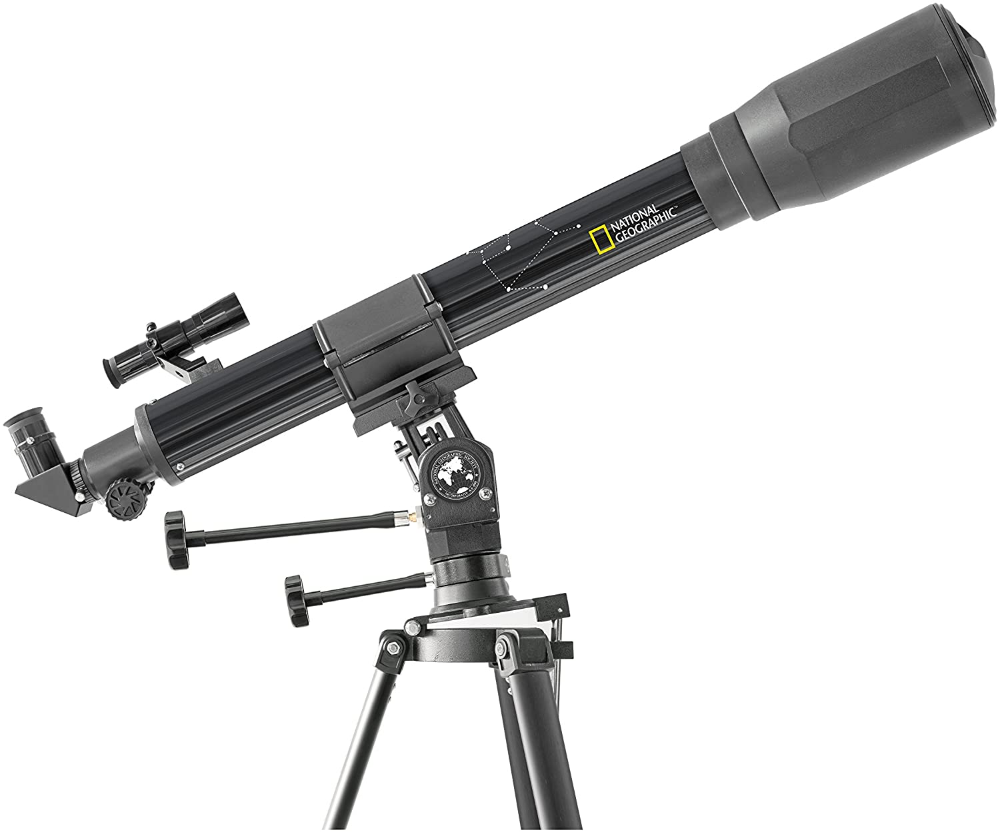
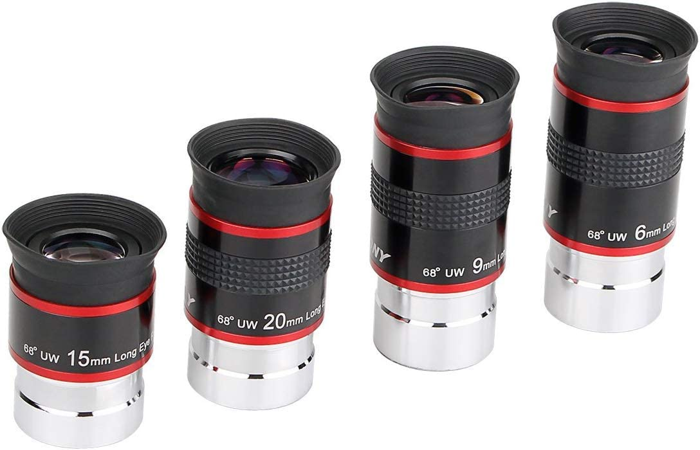
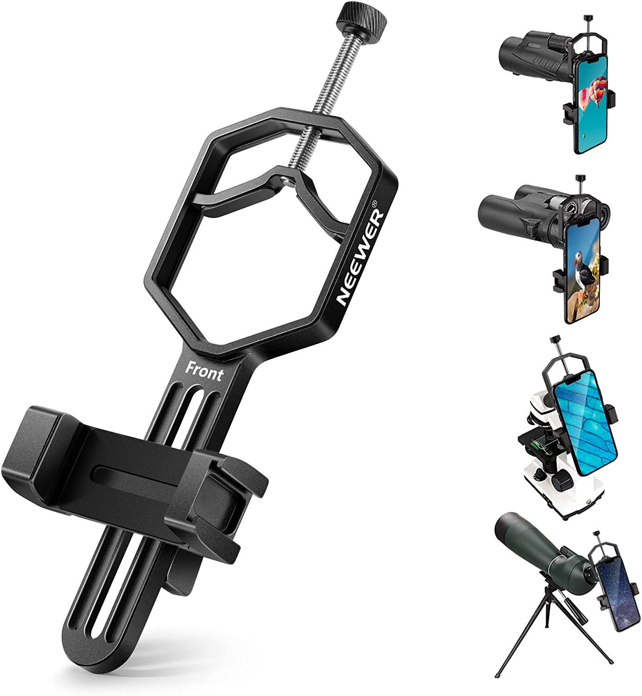

Telescopio National Geographic 70/900
Con Montura Multiusos para observaciones en modo acimutal y ecuatorial
Diámetro de la lente: 70 mm; longitud focal: 900 mm
Aumento: 45x337 (máximo recomendado: 140x)
Visor óptico 6x25 mm / 3 oculares (4,12,20 mm) / 3x lentes inversas
Ver Precio

Svbony Kit Ocular Telescopio 1.25",Ocular Ultra Gran Angular 68
El kit oculares telescopio tiene diferentes tamaños para cumplir con sus diferentes requisitos Hay rosca de 6mm 9mm 15mm 20mm
Ver Precio

NEEWER Soporte de Adaptador de Telescopio de Teléfono Móvil
Soporte de teléfono para telescopio Este soporte para teléfono inteligente NEEWER se adaptará a su telescopio con un diámetro exterior del ocular que va desde 1,18"/ 30mm a 2,52" / 64mm
Ver Precio